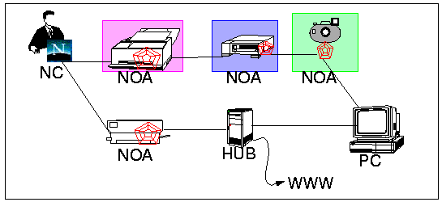

Note that a simple interface does not imply that the system itself is simple. In fact, building a system which is simple to use often requires much more effort and hidden complexity than traditional applications. Knowledge is the key added value. Platform for deploying knowledge as customer solutions. Process for developing knowledge to meet customer needs. HW getting cheaper, time getting scarcer.
Traditional peripherals, such as
printers and scanners, rely on properly configured PC's and do not work
as appliances. Traditional office machines, such as copiers and fax,
manipulate only paper documents and will not work in the electronic document
office. In the future, the functions of these machines may be served by a new
class of Information Appliances, which can send, retrieve, and manipulate
electronic (and paper) documents.

Notice that the appliance, in this case a WebPrinter, sits between a user's browser and a server providing a location for task specific computation (embodied by agents). By encapsulating these functions within a single box, we greatly reduce the burden on users (no software installation, no training, no incompatibilities to resolve, etc.), improve reliability and performance, and can provide new value added features.
The PIA group is building this enabling technology, and developing a strategy for rapidly prototyping and constructing the software components of Information Appliances.
{kind=link}